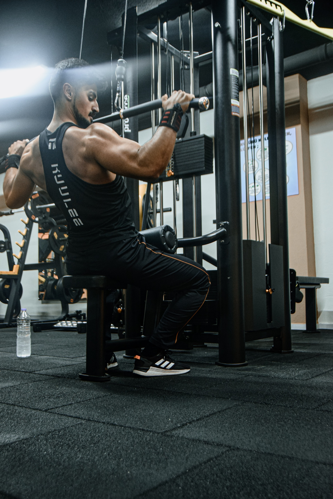

•Incline Dumbbell Press, Incline Chest Press Machine, Incline Smith Machine Chest Press
•Flat Bench Press, Chest Press Machine, Dumbbell Chest Press
•Cable (high to low) chest press, Chest dips
Welcome to FitHealth, where we've designed a variety of workout routines to target various muscle groups and help you achieve your fitness goals. Whether you're a beginner looking to get started on your fitness journey or an athlete searching for inspiration, our collection of workouts caters to all levels. From strength training to cardiovascular exercises, you'll find routines designed to build strength in every major muscle group.
(Choose one workout from each bullet)
Chest:
•Incline Dumbbell Press, Incline Chest Press Machine, Incline Smith Machine Chest Press
•Flat Bench Press, Chest Press Machine, Dumbbell Chest Press
•Cable (high to low) chest press, Chest dips
Triceps:
•One arm cross-body cable extension
•Cable overhead extension
•Bodyweight dips
Back:

•Smith Machine Barbell Row
•Chest Supported T-Bar Row
•Seated Cable Row
•Medium Grip Lat Pulldown
Biceps:
•Standing dumbbell curls, sitting dumbbell curls
•Cable Hammer curls, Dumbbell hammer curls
•Preacher Curls
Shoulders:
•Dumbbell Shoulder Press
•Seated dumbbell front raise, Cable front raise
•Side cable lateral raise
•Rear pec deck fly machine
•Shoulder shrugs
Legs:
•Barbell Back Squat
•Leg Press
•Leg Curl
•Leg Extension
•Calf Raise
Abs:
•Russian Twists
•Knee-To-Chests
•Bicycle Kicks
•Plank
•Crunches
Cardio Exercises:
•Jump Rope
•Biking in Place
•Running in Place
•Burpees